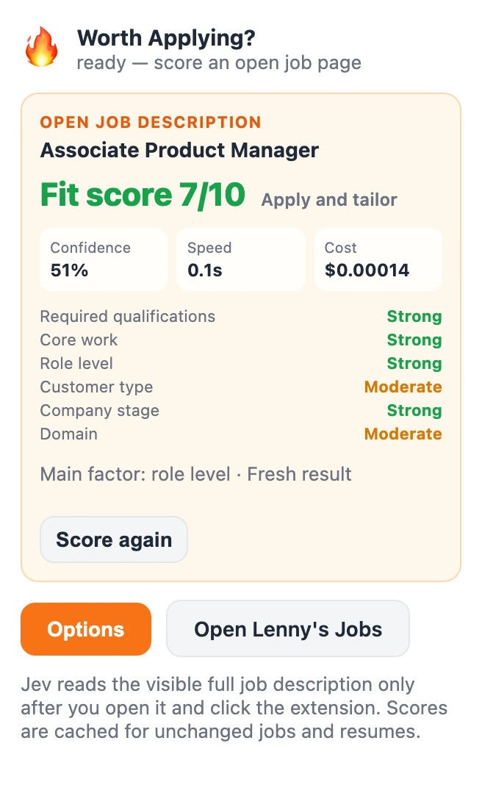
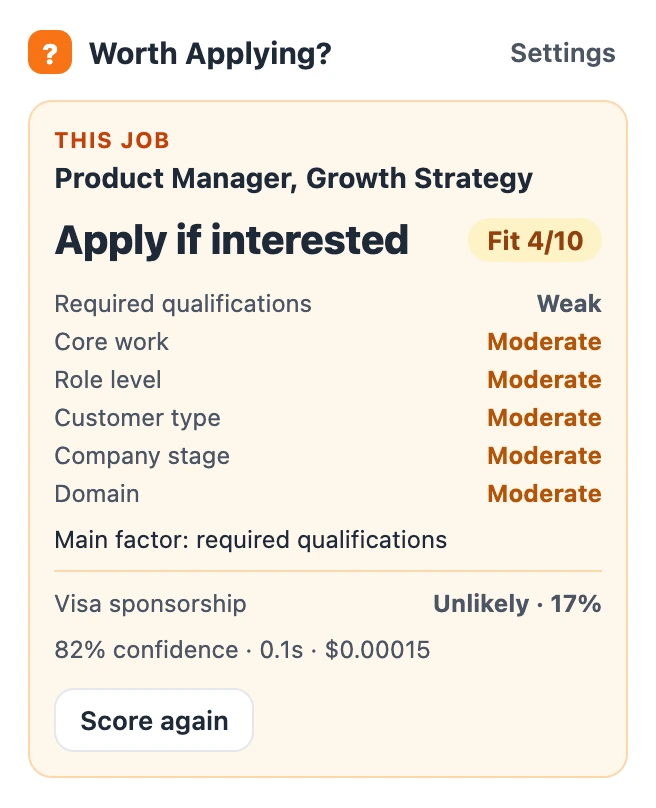
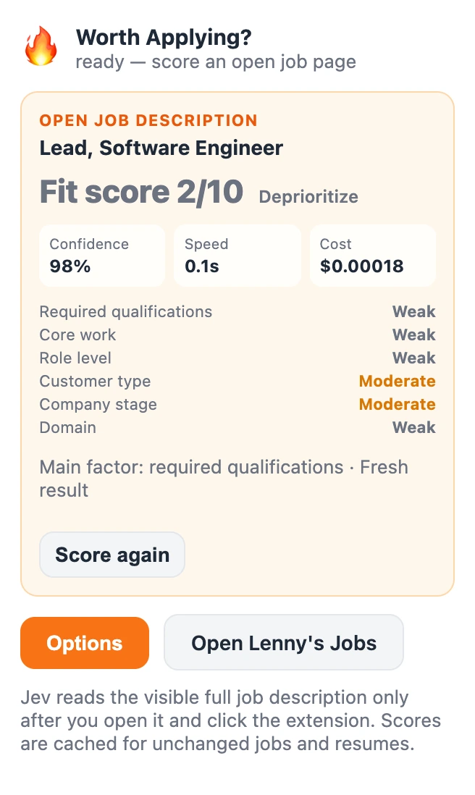

Chrome extension
Know if a job fits before you apply.
Worth Applying? scores any job posting against your resume in about a second.
Open source. Bring your own TypeSafe API key. Each score costs a fraction of a cent.



Real results from our test run, with company names removed.
Why it matters
Most postings aren't a ready fit.
We scored one MBA candidate's resume against 101 job postings, mostly product roles.
Reading every posting to find that out takes time you could spend on the 13 that fit.
How it works
Set it up once. Then one click per job.
Paste your resume once.
It stays in your browser. Turn on the visa estimate if you need sponsorship.
Open any job posting.
Company career pages, job boards, anywhere the description is on the page.
Click the icon.
You get a score out of 10, a recommendation, and a six-part scorecard.
What the score looks at
A decision model answers nine questions about your resume and the job at once. It returns typed answers with probabilities instead of writing text, which keeps it fast and cheap.
The six parts are listed from most to least weight. Visa sponsorship gets its own estimate, and it never lowers your fit score.
- Required qualifications
- The experience, skills, and years the posting asks for
- Core work
- Whether you've done this kind of work
- Role level
- Whether your scope matches the role's seniority
- Customer type
- The kind of users or customers you've served
- Company stage
- Startup, growth company, enterprise, or public sector
- Domain
- The industry, which matters least
How we checked it
Checked against a full AI review.
We calibrated the score against the "Am I a fit?" analysis on Lenny's Jobs, which writes a full review of one job at a time. Then we compared the two on 101 postings. Each posting was scored by a version of our calibration that hadn't seen it.
All 101 postings were scored against one resume, so your results may differ. Lenny's Jobs is a reference point, not the truth. This project isn't affiliated with Lenny's Jobs.
Demo
See it score a real posting.
Try it now
Install it in two minutes.
It's on GitHub today. A Chrome Web Store listing is next.
- Download the code from GitHub and unzip it.
- In Chrome, open
chrome://extensions, turn on Developer mode, and click Load unpacked. - Pick the unzipped folder. Then add your TypeSafe API key and resume in Options.
Your resume and key stay in your browser. Only your resume and the job posting you're scoring go to TypeSafe. Privacy policy